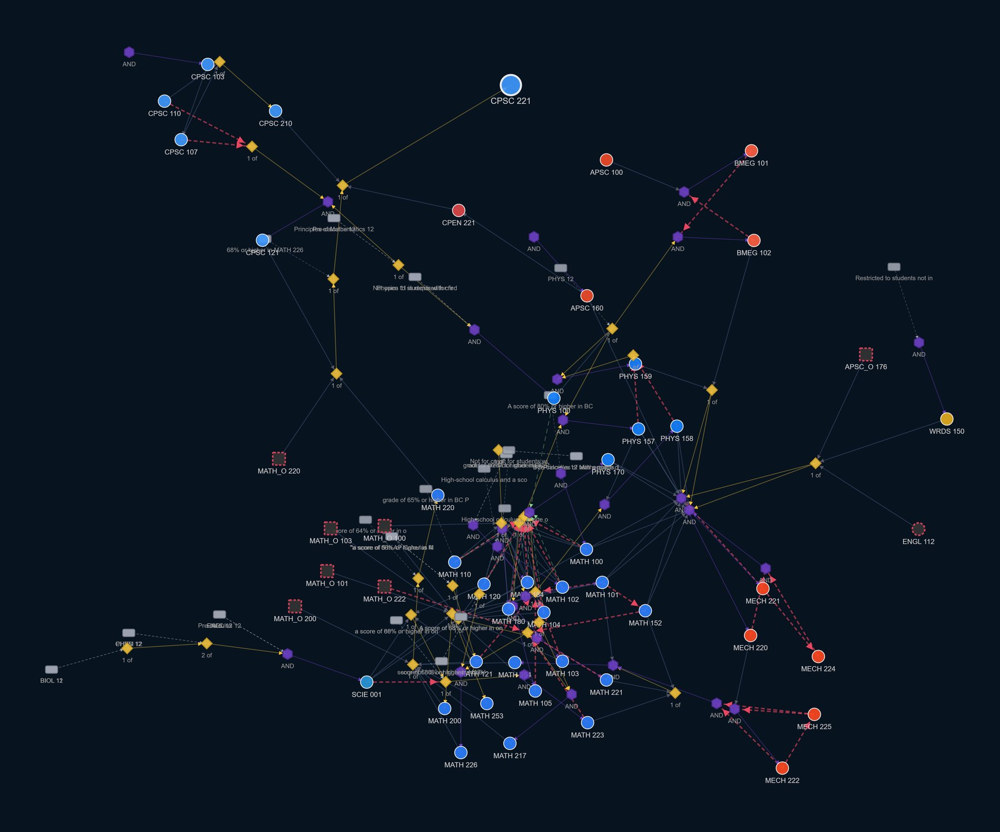

Pick a Computer Science course and the map draws everything it requires — including the choices and conditions a plain arrow cannot show.
UBC’s Academic Calendar states every course requirement in prose, and the phrasing shifts from one entry to the next: one of, all of, either (a) or (b), recommended, co-requisite, standing. Most planning tools flatten all of that into a single kind of arrow, which turns “either of these two” into “both of these” — a requirement the Calendar never stated.
This project reads each requirement sentence into a formal expression, checks that expression back against the sentence it came from, and keeps the operators as nodes in the graph. That is why there are hexagons and diamonds here and not just lines.
This page is a slice: the — Computer Science courses and the requirement structure behind them. A prerequisite from another subject is drawn faded — you can read what it is, but its own prerequisites are not part of this slice. The full project covers every course in the Vancouver calendar.
Follow every branch and the picture stops being one. Below is the same kind of graph drawn with no subject boundary: one Computer Science course, and every prerequisite behind it followed to the end, out through MATH, PHYS, MECH, BMEG and the rest.
Computer Science is a bad case for this. Its requirements are full of choices, so a course fans out into several branches instead of one chain, and those branches rejoin further down — a single 200-level course reaches most of first year within a few steps.

So this page stops at the edge of the subject. A prerequisite from another subject is drawn faded and described, and its own prerequisites are left out. That is a deliberate loss of information in exchange for a picture you can actually read.
Search for a course at the top. Drag the background to pan, pinch or scroll to zoom, and drag a node to move it. Tap anything to read it.
This page is one subject out of a project that covers every course in the Vancouver calendar, and I intend to make the full version publicly available. If you find it interesting, or you have a suggestion, I would like to hear from you.
Made by Daniel Simões Brandão · UBC Computer Science.
Course titles and descriptions come from the UBC Academic Calendar and remain UBC’s. The Calendar is the authority on requirements; this is a reading of it and can be wrong. Check with an advisor before you register.
Spotted a mistake, or have an idea? Fill in the feedback form.